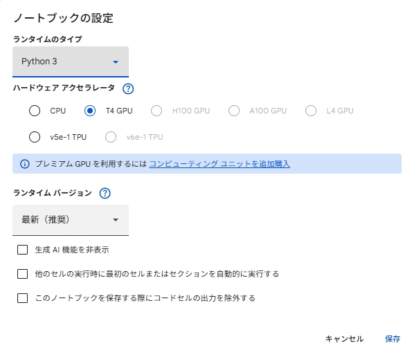
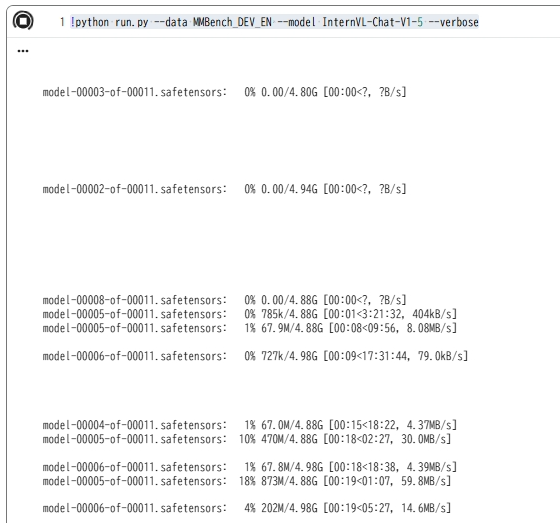

先日説明したVLMの評価指標について、手を動かして結果を見てみるとイメージがつきやすくなります。
今回は、実際に評価の自動化の手順を説明します。
手順
1. 全体のイメージ：VLMの「健康診断」
VLMの評価とは、モデル（脳）に大量のテスト問題（画像と質問）を解かせ、その正解率を算出することです。
- VLMEvalKit: 試験監督（問題を出し、採点し、成績表を作るツール）
- Dataset: 問題集（画像と質問のセット）
- Model: 受験生（評価したいAIモデル）
2. 準備：試験会場（環境）を作る
まずは、ツールが動く場所を作ります。
# 1. ツールをダウンロード（リポジトリの取得）
git clone https://github.com/open-compass/VLMEvalKit.git
cd VLMEvalKit
# 2. ツール専用の部屋を作る（Python仮想環境）
conda create -n vlmeval python=3.10 -y
conda activate vlmeval
# 3. 必要な道具を揃える（ライブラリのインストール）
pip install -r requirements.txt
初心者へのヒント:
condaを使うことで、他のプロジェクトの環境を壊さずに安全に実験できます。
3. データ準備：問題集を手に入れる
VLMには様々な問題集（ベンチマーク）がありますが、最初は MMBench がおすすめです。
# MMBenchという有名な問題集をダウンロード
python scripts/download_datasets.py --dataset MMBench_DEV_EN
- MMBenchとは？: 「画像の中に何がある？」「このグラフから言えることは？」といった、認識・推論・常識など幅広い能力を試す20種類以上の問題が入った代表的なベンチマークです。
4. 実行：試験を受けさせる（推論）
ここが本番です。AIモデルに問題を解かせます。
python run.py \
--model llava-v1.5-7b \
--dataset MMBench_DEV_EN \
--num-samples 50
--model: 誰に試験を受けさせるか。llava-v1.5-7bはオープンソースで有名な「優等生」モデルです。--num-samples 50: 【重要】 全部で数千問ある問題を、最初の50問だけで切り上げます。時間がかかりすぎないようにするための「お試し設定」です。
5. 採点：成績表を確認する
試験が終わったら、自動で採点が行われます。
python eval.py \
--dataset MMBench_DEV_EN \
--pred outputs/MMBench_DEV_EN/llava-v1.5-7b.json
- 出力例:
MMBench_DEV_EN Accuracy: 0.682 - 見方: 「このモデルは、画像を見て質問に答えるタスクで 68.2% 正解した」という意味になります。
6. 指標の意味を知る（主なベンチマーク）
成績表に並ぶ単語が何を表しているか、主要なものを整理しました。
| ベンチマーク名 | 測っている能力 | 初心者向け解説 |
|---|---|---|
| MMBench | 総合力 | 認識、推論、数え上げなど「全科目の合計点」。 |
| POPE | 誠実さ（ハルシネーション） | 「ないものをあると言わないか」という嘘の少なさ。 |
| SEED-Bench | 動画・空間理解 | 時間の流れや、物体の位置関係を正しく把握できるか。 |
| MMMU | 専門知識 | 大学レベルの科学・美術・ビジネスなどの難しい問題。 |
更に詳細を知りたい場合以下をご覧ください。
https://yoshishinnze.hatenablog.com/entry/2026/01/26/000000
実際に動作
google colabを起動します。
- GPUの設定

- リポジトリ取得
!git clone https://github.com/open-compass/VLMEvalKit.git
%cd VLMEvalKit
- 関連パッケージインストール
!pip install -r requirements.txt
- 実行
今回はMiniCPM-V-2というモデルを使って、MMBench_DEV_ENの評価を行います。
2026年年初時点でVLMEvalKitにて、使えるモデルは以下の通りです。
| 分類 | モデルKey (--model) |
実際のモデル名 | 備考 |
|---|---|---|---|
| MiniCPM系 | MiniCPM-V-2 |
MiniCPM-V 2.6 | 高解像度・軽量・高性能 |
MiniCPM-Llama3-V-2-5 |
MiniCPM-Llama3-V 2.5 | Llama3ベースのVLM | |
| Qwen系 | qwen2_vl_7b_instruct |
Qwen2-VL-7B-Instruct | 日本語にも強い最新標準モデル |
qwen2_vl_2b_instruct |
Qwen2-VL-2B-Instruct | 計量・軽量モデル（小規模環境向け） | |
qwen_vl_chat |
Qwen-VL-Chat | 初代Qwen-VL | |
| InternVL系 | InternVL2-26B |
InternVL2-26B | 非常に強力なオープンモデル |
InternVL2-8B |
InternVL2-8B | バランスの良い中規模モデル | |
InternVL-Chat-V1-5 |
InternVL-Chat-V1.5 | 先ほどエラーが出ていたV1.5系 | |
| Llama系 | Llama-3.2-11B-Vision-Instruct |
Llama-3.2-11B-Vision | Metaリリースの公式Visionモデル |
Llama-3.2-90B-Vision-Instruct |
Llama-3.2-90B-Vision | 非常に大規模な高性能モデル | |
| LLaVA系 | llava_v1.5_7b |
LLaVA-v1.5-7B | VLMブームの火付け役（標準） |
llava_v1.5_13b |
LLaVA-v1.5-13B | LLaVAの高精度版 | |
llava_next_llama3_8b |
LLaVA-NeXT (Llama-3-8B) | LLaVAの改良版 | |
| Google/MS系 | paligemma-3b-pt-224 |
PaliGemma-3B | Googleの軽量転移学習モデル |
phi3-vision-instruct |
Phi-3 Vision | Microsoftの軽量・高効率モデル | |
| 独自系 | GLM-4v-9b |
GLM-4v-9B | 中国で人気の高い高性能モデル |
cogvlm2-llama3-chat-19b |
CogVLM2-Llama3-Chat | 視覚理解に特化した構造 | |
| クローズドAPI | gpt4v |
GPT-4V (OpenAI) | API経由で利用する最高峰モデル |
gemini-1.5-pro |
Gemini 1.5 Pro | Googleの長文・高精度APIモデル | |
claude3v_opus |
Claude 3 Opus | Anthropicの最上位モデル |
!python run.py --data MMBench_DEV_EN --model MiniCPM-V-2 --verbose
するとモデルのダウンロードが行われます。

その後はモデルに問題を解かせていきます。

評価が終わると以下のようにサマリが出力されます。
-------------------------------------- ------------------
split dev
Overall 0.8651202749140894
AR 0.8894472361809045
CP 0.9222972972972973
FP-C 0.8251748251748252
FP-S 0.8703071672354948
LR 0.6949152542372882
RR 0.8869565217391304
action_recognition 0.9444444444444444
attribute_comparison 0.8863636363636364
attribute_recognition 0.972972972972973
celebrity_recognition 0.8787878787878788
function_reasoning 0.9113924050632911
future_prediction 0.675
identity_reasoning 0.9777777777777777
image_emotion 0.94
image_quality 0.7358490566037735
image_scene 0.9807692307692307
image_style 0.9622641509433962
image_topic 0.9444444444444444
nature_relation 0.875
object_localization 0.7654320987654321
ocr 0.8717948717948718
physical_property_reasoning 0.8133333333333334
physical_relation 0.875
social_relation 0.9069767441860465
spatial_relationship 0.6222222222222222
structuralized_imagetext_understanding 0.7051282051282052
-------------------------------------- ------------------
評価結果の見方について
1. マクロ評価指標（略称：大項目）
これらは、各個別タスクを特定の能力カテゴリごとに集計したものです。
| 指標名 | 内容（推定されるフルスペル） | 何を示すか |
|---|---|---|
| Overall | Overall Accuracy | 全タスクの平均スコア。モデルの総合的な実力を示します。 |
| AR | Attribute Recognition | 属性認識。物の色、形、状態などを正しく認識する力。 |
| CP | Comparison | 比較能力。2つ以上の対象の大きさや属性を比べる力。 |
| FP-C | Fact-based Prediction (C) | 事実に基づく予測。画像内の事実に即した論理的な予測。 |
| FP-S | Fact-based Prediction (S) | 事実に基づく推論/情景理解。状況証拠から文脈を読み取る力。 |
| LR | Localization / Reasoning | 位置・推論。物体がどこにあるか、なぜそうなっているかの高度な理解。 |
| RR | Relation Reasoning | 関係推論。物体間の物理的・社会的なつながりの理解。 |
2. 詳細タスク別評価（小項目）
具体的なタスク内容ごとの正答率です。
| 指標名 | 意味（日本語） | 評価されている能力 |
|---|---|---|
| action_recognition | 動作認識 | 人や動物が「何をしているか」を捉える力。 |
| attribute_comparison | 属性比較 | 「AはBより大きいか」といった比較の正確さ。 |
| attribute_recognition | 属性認識 | 物体の色や質感などを正確に特定する力。 |
| celebrity_recognition | 有名人物認識 | 著名人の顔や名前を特定できる知識量。 |
| function_reasoning | 機能推論 | 物体が「何のために使われるか」という道具的理解。 |
| future_prediction | 未来予測 | 「この後何が起きるか」を推測する時系列的な理解。 |
| identity_reasoning | 同一性推論 | 対象が何であるかを特定・分類する論理。 |
| image_emotion | 画像感情分析 | 画像から受ける雰囲気や感情を読み取る力。 |
| image_quality | 画像品質評価 | 画像が鮮明か、ノイズがあるかなどの品質判断。 |
| image_scene | シーン認識 | 「台所」「屋外」「街中」など場所の全体理解。 |
| image_style | 画像スタイル認識 | 油絵風、写真、漫画など、表現手法の識別。 |
| image_topic | 画像トピック | 画像が何のテーマ（政治、スポーツ等）を扱っているか。 |
| nature_relation | 自然界の物理関係 | 植物や動物、自然現象の相互作用の理解。 |
| object_localization | 物体位置特定 | 座標的な位置や「右、左、上」の正確な把握。 |
| ocr | 文字認識 | 画像内のテキスト（看板、書類など）を読み取る力。 |
| physical_property_reasoning | 物理特性推論 | 重さ、硬さ、材質などの物理学的な推論。 |
| physical_relation | 物理的関係 | 物体同士が接しているか、中にあるかなどの関係。 |
| social_relation | 社会的関係 | 人間同士の握手、対立、協力などの社会的文脈。 |
| spatial_relationship | 空間的関係 | 奥行きや重なりなど、3D空間における配置理解。 |
| structuralized_imagetext_understanding | 構造化図表理解 | グラフや表など、レイアウトされた情報の読み取り。 |
結果の分析
今回利用したモデルの結果を見ると、以下のような傾向が見て取れます。
- 得意（>0.95）:
image_scene(0.98),identity_reasoning(0.97),attribute_recognition(0.97) など。 「何がどこにあり、どんなシーンか」を特定する基本的な認識力 は極めて高いです。 - 苦手（<0.70）:
spatial_relationship(0.62),future_prediction(0.67),LR(0.69) など。 「空間的な位置関係」や「時間の経過に伴う予測」 といった、高次元の推論に課題があるようです。
最後に
実務や研究でVLMモデルを使う場合、目的にあっているかを定量的に評価したい場面が多々あると思います。
- そんな際に比較基準を揃える、や、評価の土台を揃えるといった観点
- 件数が多く自動化が必要
という場面で今回のように自動で評価する手法は役に立つと思います。